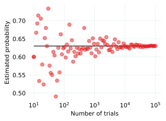

Marcado Aleatorio de un Tetraedro
El día de ayer (junio 4 de 2020), Christian Howard publicó en Twitter la siguiente pregunta
Dado un tetraedro τ. Para cada cara triangular de τ, marcamos al azar uniformemente uno de sus aristas. ¿Cuál es el probabilidad de que exista una arista de τ que se marca dos veces?
Pensé un poco pero no pude encontrar la manera apropiada de hacer e conteo. Entonces, se me ocurrió un número de la nada: \(2/3\), pero no sé por qué. Así que decidí correr una simulación para verificar este número.
La respuesta correcta es \(51/81\), aproximadamente 63%. este cálculo está bien explicado en el blog de Christian con algunos gráficos interesantes (y memes).
El algoritmo
El algoritmo es bastante simple. Se enumeran las aristas de cada cara siguiendo una orientación antihooraria:
cara 0: arista 0, arista 1, arista 2
cara 1: arista 0, arista 3, arista 4
cara 2: arista 1, arista 5, arista 3
cara 3: arista 2, arista 4, arista 5
Luego, se toma cada cara y se elige un número al azar entre \((0, 1, 2)\) se marca la arista correspondiente, y se procede a la siguiente cara. Se repite este proceso muchas veces y se cuentan los casos favorables y se dividen por el número total de intentos para obtener un estimado de la probabilidad.
A continuación se muestra un código de Python con esta idea.
import numpy as np import matplotlib.pyplot as plt faces = np.array([ [0, 1, 2], [0, 3, 4], [1, 5, 3], [2, 4, 5]]) def mark_edges(): marked_edges = np.zeros((6), dtype=int) for face in faces: num = np.random.randint(0, 3) edge = face[num] marked_edges[edge] += 1 return marked_edges def comp_probs(N_min=1, N_max=5, ntrials=100): prob = [] N_vals = np.logspace(N_min, N_max, ntrials, dtype=int) for N in N_vals: cont_marked = 0 for cont in range(N): marked = mark_edges() if 2 in marked: cont_marked += 1 prob.append(cont_marked/N) return N_vals, prob #%% Cálculos N_min = 1 N_max = 5 ntrials = 100 np.random.seed(seed=2) N_vals, prob = comp_probs(N_min, N_max, ntrials) #%% Gráficos plt.figure(figsize=(4, 3)) plt.hlines(0.63, 10**N_min, 10**N_max, color="#3f3f3f") plt.semilogx(N_vals, np.array(prob), "o", alpha=0.5) plt.xlabel("Number of trials") plt.ylabel("Estimated probability") plt.savefig("prob_tet.svg", dpi=300, bbox_inches="tight") plt.show()
Y podemos ver la evolución del estimado para diferente número de intentos.

Comentarios
Comments powered by Disqus